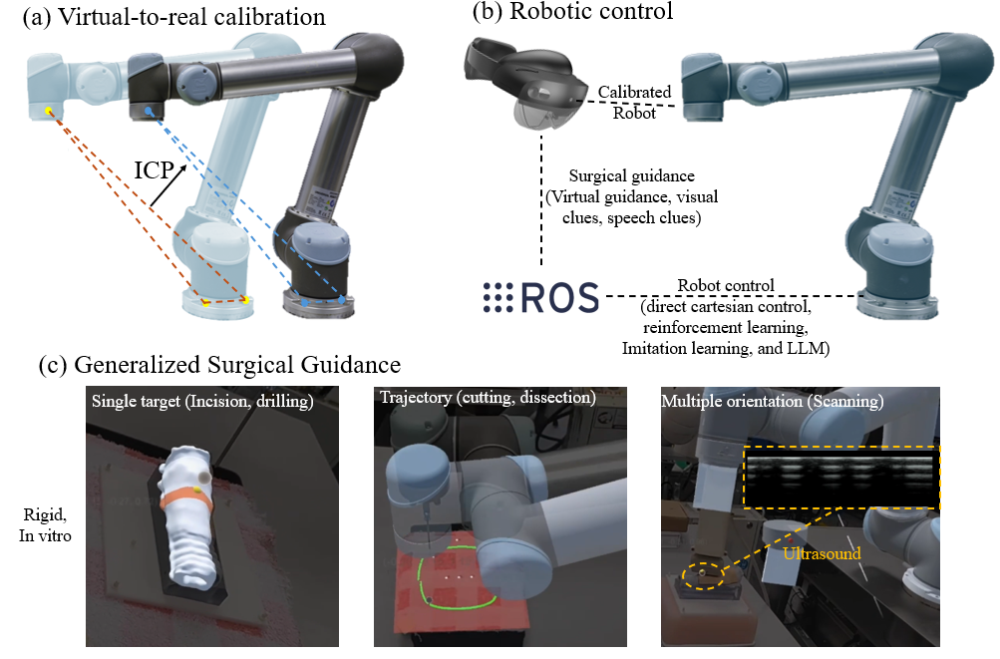

CUHK Robotics Research
Generalized AR-assisted surgical robot platform
Developed a reusable AR interface for virtual-to-real calibration and robot teleoperation. The platform supports waypoint control, end-effector dragging, single and multiple targets, and multiple tool orientations.
Validated across bone drilling, tracheostomy planning, and ultrasound scanning scenarios.